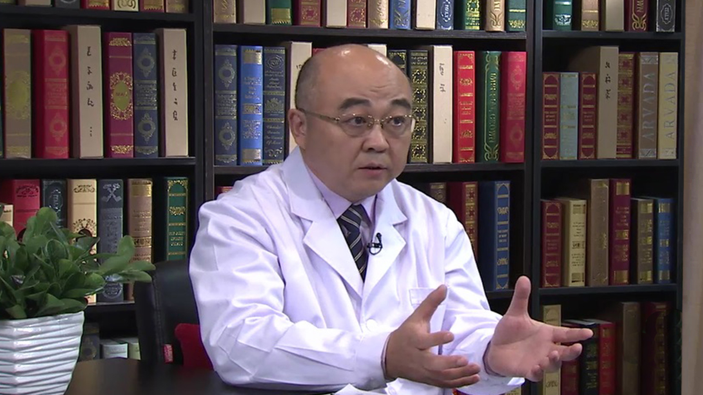

1.66 剖宫产¶
王少为 主任医师¶

卫生部北京医院产科主任，主任医师，博士生导师；
中国优生优育协会生殖系疾病学会副主任委员；中国医院协会妇产科医院管理分会常务理事；中国妇幼保健协会常务理事；北京医师协会妇产科分会常务理事；北京医学会早产与早产儿医学分会委员；北京医学会妇产科学分会委员。
主要成就： 获得国家发明专利三项；先后主持完成国家自然科学基金三项，北京市科委重大科技攻关项目两项；现主持包括吴阶平基金会、首都医学发展科研基金、北京市科委等科研项目三项；近五年发表论文三十余篇，其中SCI收录五篇，参编《中华围产医学》等专著六部。
专业特长： 擅长高危妊娠、生殖病理生理、遗传病产前诊断和围生期营养与代谢性疾病等方面的诊治与处理，改良了腹膜外剖宫产、凶险性前置胎盘的手术方式，创新性建立了宫颈机能不良的临床治疗方式和器械。
剖宫产是怎么回事？¶
剖宫产反正就是从肚子切开口，经腹壁到达子宫，把子宫的子宫壁打开把孩子取出来,就是这样的一个过程。但因为它是经过腹壁的切口，就是说要做剖腹的手术了，但是现在确切的应该说应该要把子宫切开、子宫壁切开，所以我们叫剖宫产，就是这样的。
剖宫产说起来它应该说是一种手术方式，具体的说就是我们经过孕妇的腹壁把腹壁打开，然后经过皮下组织等等到了子宫壁，然后把子宫打开，打开以后把孩子取出来，再去一层层地缝上，这样的一个手术的过程。
我们为什么叫剖宫，不叫剖腹，因为我们最终归结的是把子宫切开，就这样的一个概念，所以从医学的术语来讲我们叫剖宫产，但是老百姓的理解剖宫（产）和剖腹（产）是一回事了。
它应该说是一个解决难产的一个比较好的一个方式。到目前为止还没有任何一个手术方式能替代剖宫产，但是它绝对不是分娩的一个最好的方式，就是这样的。
哪些孕妇适合做剖宫产手术？¶
剖宫产是这样的，我们所谓的剖宫产有指征，就是医学指征，简单的说她需要做这样的手术，这叫医学的指征，我们一般的说分别有四大要素：产力、产道、胎儿形成、心理因素。
这四个要素分娩的哪个环节出现问题了，都有可能造成产程过程中的一个意外的情况的发生。所以任何一种方式（环节）出现问题了以后，都可能是（需要）剖宫产的手术。
我们把剖宫产方式分出来呢，我们一般是列为这样的几种，第一个就是母体因素的，比方说我们前面说了产力、产道，就说产道的问题，骨盆的明显的畸形，产道的过度狭窄、疤痕或者是子宫经过复杂的手术以后她有疤痕，不能耐受（产道）分娩的。或者是她有合并有肌瘤梗阻的，这个产道梗阻的，第一产道的梗阻，畸形疤痕等等的，这样的因素就是产道的因素。
然后还有一种就是说我们胎儿的因素，比方在分娩的过程中，我们孩子出现了宫内窘迫了，出现意外的情况了，这样的话我们需要终止妊娠的，另外一种就是我们的早产的，为了提高孩子的生存能力，我们怕孩子出现这个颅内出血的这种并发症，这样的一些需要手术。
另外一个就是我们母亲有严重的并发症。比方说严重的妊娠高血压疾病，比方说比较严重的心脏病，脑血管疾病等等的问题，就是母亲有严重的并发症的问题。
还有一个就是我们在分娩的过程中产生的紧急情况，比方说胎盘早剥，比方说胎盘的低置或者胎盘前置，比方说分娩过程中的一个突发的状况，比如说分娩的出血这样等等的情况，就是为了挽救母儿的一个生命，需要做剖宫产的，总体来讲就是这样的。
我们可以概括的说就是母儿的因素出现了，比如说产力、产道、胎儿。另外一个就是说说到胎儿的话，孩子比方说过大的，这个骨盆相对比较狭窄了，他不能通过产道，另外一个就是孩子的胎位的问题，横外或者是超过7斤的横外，这样的胎位的异常，另外一个就是我们孩子的一个产力的问题，就是我在分娩过程中把孩子从子宫内逼出子宫的一个力量叫产力，产力出现问题了，产程过长了，这个都是剖宫产的一个适应证。
有剖宫产指征的我们叫有医学指征的人，她就应该说绝大多数都应该是适合于做剖宫产的，什么样的人不适合剖宫产呢？我觉得能经过阴道分娩的，因为阴道分娩是一个自然的过程，能经过阴道分娩的我个人认为就不适合去做，就不应该去做剖宫产。
就是你高血压的人她如果是没有其它的问题，她也可以自然分娩，但是心功能不好的，严重的心脏病，心功能不好的，她不能耐受分娩的一个创伤，她就不能经阴道分娩，但是这样的病人，可能她在剖宫产的过程中也有一些风险，比方说要承担麻醉的风险，承担受感染的风险等等的问题，所以你说什么样的人，就绝对绝对的不适合剖宫产，好像现在从现代医学的发展到今天的话，不适合剖宫产的人就是她不能妊娠的人，是这样的。
剖宫产手术前需要做好哪些准备？¶
剖宫产的的手术我们分成两大类，一大类叫择期的剖宫产，一部分叫急诊的剖宫产，择期就是我选择时间去做，还有一部分叫急诊剖宫产，就来了以后必须得马上做了，不做就不行了，可能就危害大人的生命了。
剖宫产的准备一般是这样的，我们首先要完善一些必要的检查，比方说我做手术了我要了解她心肺功能，我要了解她的血常规、凝血象，因为这样的情况，跟我们的手术过程中的一个麻醉的方式的选择，手术的方式的选择，术后的一个治疗等等都有关系的。
打个比方，比方这个人她凝血功能不好，她就不能适合硬膜外麻醉，所以你一定要了解这样的信息，就是我必要的辅助检查，化验检查，一定要了解的，这是第一个。
第二就是通常我们说的术前准备，比方说切口局部的一个清洁、备皮，切口的选择的一个方式。
另外一个就是我们医生要针对个体（治疗），什么叫个体化治疗？就针对于某一个体提供一个个体化的一个手术治疗，手术方式。虽然都是剖宫产，但是不同的人群可能对于剖宫产的一个手术的一个切口，手术过程中的一个选择等等都有问题。
还有一个我们手术过程中的一个紧急的情况，应急状态的一个预案要做，这是我们做的一个准备。
简单的说一个剖宫产准备，第一要检查，就是要完善检查。第二我要做一个切口周围的一个必要的一个准备。
另外这样的病人要预防性应用抗生素，所以我就选择抗生素的时候，有些抗生素是需要做过敏（试验）的，所以我要做一个皮试，做一个过敏反应的一个实验。
还有另外一个就是我可能要备一些血，因为手术创伤可能会要有出血，通常情况下一般的没有特殊情况的，可能就备一点点血，就应付急诊就够了，但是如果比方说有前置胎盘的，估计她出血会很多的，我们肯定要血要备充足了，因为没有血会要命，就这个意思。
剖宫产的最佳时间是什么时候？¶
剖宫产的时间，就是说我个人的理解就是所谓的剖宫产最佳时间，就是你觉得什么时间做剖宫产最好。
从医学的角度来讲，就是我们一个孕妇不管选择哪一种方式，首先我要最大限度地保证母亲和孩子的安全。我们所谓的儿童优先、母亲健康，就是你一定要在最大程度上保证孩子和妈妈的一个安全，这个就是剖宫产的一个时机的问题了。
首先我们要尽量地让孩子足月，就是在母亲的状况下允许的情况下，我让孩子维持到一个足月，就是过了37周足月的一个情况。
另外一个如果母亲有并发症的，解除妊娠是对母亲的一种生理性的一个解放。比方说妊娠高血压疾病，所谓的子痫前期，它就是妊娠特发性疾病。她孩子不出来，妊娠不松弛，母亲的疾病是解决不了的。
在这种情况下我要选择一个最好的一个方式，就是这个让母亲和孩子达到一个共同的利益的最大化，通俗一点说就是在保证母亲安全的情况下，让孩子尽量地成活的能力强，这是我们剖宫产的一个最佳的时机，没有其它的时机，就是这样的一个时机，大人孩子都安全是最好的事情。
剖宫产手术是怎么做的？¶
剖宫产的过程第一麻醉，首先我要选择一个麻醉的方式麻醉好，然后我消毒、铺单才开始做手术了。
单纯就我手术这个过程来讲，我通常情况下，我要打开六到七层，你看要把皮肤切开，皮下的脂肪切开，然后下面就是腹直肌前鞘了，把腹直肌前鞘剪开，把腹直肌分开，四层了，腹直肌前鞘分开以后们通常情况这个时候就到了腹膜了。
手术方式有两种，有一种我叫腹膜外的，有一种叫腹膜内的。如果是腹膜内的手术的话我要把腹膜打开，把腹膜打开以后然后把膀胱腹膜反折再剪开以后，推开暴露子宫下段，再把子宫下段切开，切开以后把羊膜囊刺破，把羊水吸干净，把孩子取出来，然后再反过来，子宫肌层、子宫夹膜层，然后腹膜、腹直肌、腹直肌前鞘、皮下脂肪，再一层层地放开，这就是七层，就是进去七层，回来再缝上七层，这是剖宫产的一个（过程）。
这个如果是腹膜外呢，我到了腹膜这一层，我不打开腹膜，就不进腹腔了，然后在腹膜外间隙把膀胱推开，把腹膜囊推开，暴露子宫下段，把子宫下段打开，这样的话就是六层，实际上我们任何一个剖宫产都跑不掉这几步了。
剖宫产手术的麻醉对胎儿有影响吗？麻醉方式有哪些？¶
我们现在的麻醉对孩子是不会有影响的。
麻醉三种，局麻、腰麻、腰硬联合的，老百姓说就是半麻的，我这手术的区域可以麻醉，手术的下边是麻醉的，我们叫椎管内阻断，就局麻、椎管内麻醉和全麻就是三种。
一般来讲我们通常的现在我们比较喜欢选择的就是椎管内麻醉，所谓的椎管内麻醉呢，就是在脊柱的后面打一针，然后把麻药打了，就是说我们需要手术的那个手术部位的下面给它阻断了，就这样的话，就完全可以起到一个手术的一个镇痛和一个手术的一个肌肉松弛的一个效果了。
如果这个人有严重的皮肤病，另外穿刺的地方不能打针，或者说这个人凝血功能特别不好，我怕椎管内出血了以后将来会截瘫，或者有其它的问题，紧急情况下，我来不及去做椎管内麻醉了，可能就选择局部麻醉。
所谓的局部麻醉就是切口的地方打麻药，这个一般来讲，一个是集中不好。第二病人比较痛苦，是不得已而为之的。
另外一种就是我们的全麻，所谓的全麻就是全身麻醉，病人是处在一种昏睡或者是深度睡眠的一种状态，她完全不知道你的任何操作，我前面说的两种麻醉方式她是清醒的，后面的全麻她是不知道了，睡着了，但是一般来讲我们剖宫产的方式不需要选择全麻。因为我们全麻可能需要气管插管呼吸等等，在麻醉的风险来讲要比前面两种要大得多。
所以我们一般来讲没有特殊情况，就选择椎管内麻醉了，三种方式。
剖宫产术后如何选择镇痛方式？¶
如果你在剖宫产过程中选择的椎管内麻醉，椎管内的镇痛是现在目前来讲腹部手术，或者是我们剖宫产手术的一个镇痛的一个最佳的一个方式。
如果你没有这种条件，第一就是我不适合于椎管内的（麻醉），你选择的局麻或者全麻的方式，还有就是我静脉的麻醉泵，就放一个一个泵，然后定时定量的缓慢的去给镇痛的药物，这是一个。
另外一个我们就通常大家说的什么杜冷丁、吗啡，那样的这短效的镇痛的针。
剖宫产术后该如何护理？¶
产后一个问题，我们第一麻醉的一个恢复，因为你麻醉了以后，全麻可能就醒了，就回去了，就没有什么特殊的，但是我们椎管内麻醉的话，首先你做了一个手术的时候，从大的来讲有麻醉的一个恢复的过程。
在麻醉恢复过程中，你打了麻醉以后，她可能下肢的活动是障碍的。孕期是一个高凝状态，容易形成血栓，所以回来以后我们要在她不能动的时候，我们要帮她揉揉腿，帮她活动活动，以免血栓的一个形成，这是第一个问题。
第二个问题就是我们专科常见的问题，因为她有出血的问题风险，所以要看子宫复旧的问题，然后出血的问题。
另外一个就是说我们的手术部位切口的一个感染的问题，还有一个我们鼓励她活动的问题。
另外一个就是产妇生完了以后，母乳喂养的问题，这都是我们术后要做的。
还有一个她什么时候进食，什么时候下床活动等等的一些，包括我们医疗护理和生活的护理，医疗的和生活的两方面都是要做的。
从医学来讲它是一样的，只是说剖宫产的病人她要比经阴道分娩的人，她经历了一道手术的一个创伤的打击，所以她可能在最初的几天，一个是疼痛的问题，因为任何一个手术，它有手术的创伤，创伤的打击的问题，她可能在最初的几天，她会比阴道分娩的人要多一份精心，多一份呵护，就是这样的。但是从月子里头从医学的角度来讲，它没有特殊的。
我们这个切口要是愈合的话，长的好的话，一般来讲就是过了24小时，如果没有感染的状况下，这个切口就已经开始修复了，7天就完全长好了，感染了最重要的问题就是红肿热痛，只要没有红肿热痛，没有感染的倾向，这个不需要特殊处理的。
减小剖宫产术后的疤痕有哪些方法？¶
这现在的疤痕第一就是人的一个体质的问题，有的人体质很好，她疤痕就不是很明显，有的人是疤痕体质，她皮下结缔组织增生以后，纤维化了以后特难看，就跟爬一条虫子一样的。
关于剖宫产这个一个处理，实际上我们现在医学有两个难题，第一是手术以后的一个粘连的问题，一个手术有疤痕的问题，单纯就这个粘连的问题，目前为止还没有解决，但是疤痕的一个问题现在有一些从整形的来讲，就我在手术缝合过程中，我可能这个缝合的方式不同，对这个疤痕的大小，美观会有影响的，这是第一个。就是我们在手术过程中，皮下和皮肤的缝合过程中，对于疤痕的防治会有一些帮助。
第二就是我们在手术以后的24小时之内，如果你是疤痕体质，我们可以有一个小剂量的一个方式放疗治疗，它可能对于我们所谓的疤痕，就是你的结缔组织增生以后，皮下的纤维化，对减轻她局部的办法，可能会有帮助。
现在有些美容的场所、美容的机构，特别是医疗就是那种防止疤痕的那种凝胶和那个切口贴，她可能用起来是有些差别的，所以现在又回答你的问题，第一我缝合的时候尽量地缝的好，第二尽量的没有皮下的出血感染，这是第一个医学角度来讲。
另外一个就是可以做一个局部的小的放疗，放疗不是化疗。第二就是有一些切口疤痕的那些预防的什么贴、膜、凝胶这样的，但是想完全完全的没有疤痕化，现在的医疗速度还没达到。
剖宫产和自然分娩到底哪个好一点？¶
我们所谓的剖宫产大家比较关注的就是，第一我们剖宫产到底是对母亲和孩子有多大的好处，如果真是好的话，它时间短，对我医生来讲，从人力成本来讲，我是要跟进阴道分娩是完全没法比的。
比方说你是选择阴道分娩了，要初产妇来讲，6-8个小时是最快的，可能长的有十几个小时，我要全程的去呵护你，因为孩子和大人的方面的问题，剖宫产对于一个比较成熟的一个产科医生来讲，最多20分钟，半小时就解决了。
所以从人力成本来讲，我产科大夫倒喜欢去做剖宫产，但是你要从衡量任何一个手术方式，或者一种治疗方式的话，你要看它远期的一个预后，我们先说大人的问题，再说孩子的问题。
自然分娩它是一个生理的过程，我们从进化论的角度来讲，如果这种方式不适合于这种物种的繁衍的话，它一定会在进化的过程中会改进的，比方说这个人类都是阴道分娩的，阴道分娩从进化来讲，它是一个最好的一个方式。就是说阴道分娩它一定是一个最好的一个方式。
我们先说剖宫产，剖宫产到底有哪些好处，或者是哪些的不好？我为什么要去选择剖宫产？真正的到了现代意义的剖宫产的时候，就是说有文字记载，大家都认可它是现代意义的一个剖宫产的话，不过就是两三百年的历史。
剖宫产是解决难产的一个最佳的方式，到目前来讲没有任何一种方式可以替代它，但是它不是分娩的一个最佳的方式，世界卫生组织认可的，我们剖宫产的可接受的范围内15%，说明我们绝大多数，85%以上的都可以经过阴道分娩的，都是可以自然分娩的。
我们说剖宫产对大人有哪些不好？或者说对大人有哪些好处？它是救命的，解决难产的，这是它最大的好处。但是它不是最佳的方式，我们剖宫产首先你要承担麻醉的风险，然后你要承担手术的创伤，有疤痕怎么办，术中出血，剖宫产的术中出血，要比阴道分娩出血要多一倍，我们阴道分娩时出血，现在定于24小时内超过500ml，叫产后出血，剖宫产的定的产后1000ml叫产后出血，所以它出血要多。
还有感染的风险，尽管现在的手术方式，现在的无菌制度，现在的抗生素抗感染的一个发展，到今天我们手术的感染总的发生率依旧在0.7%-3%之间，就是100个里头，可能还有1-3个人会因为切口感染问题，感染引发的一个并发症也很多了。
还有一个如果你再怀孕的话，你这个孕囊要长到前次剖宫产的疤痕上面，这个就是对医生来讲是很难的问题了，你不管你要不要孩子风险都很大，你可能就需要化疗的手段，甚至有的人就为了这一个小小的计划生育手术要重新开一次腹，然后你要想要了，我们叫凶险型胎盘，胎盘长在这，胎盘前置，胎盘植入等等的问题。还有子宫破裂的风险，很大很大的。
所以我们说只要是能够经历阴道分娩的，只要在保证母儿安全的前提下，能阴道分娩的绝对绝对不去做剖宫产，这是对母亲来讲。
那你说那孩子呢？过去有个误区，觉得说我剖宫产孩子没经过产道的挤压，孩子生出来快将来聪明，实际上是错的。
我给你举这样的几个例子，我们说评价一个孩子健康与否，第一就是孩子的过敏性，患过敏性疾病的概率是阴道分娩的6倍，就是剖宫产孩子的过敏性疾病，总体来讲呢是7.8%的一个发病率，阴道分娩的孩子是1.2%。
所谓过敏疾病包括哮喘，包括麻疹、荨麻疹、过敏性哮喘等等问题，所以过敏性疾病有的严重的会影响孩子的不仅是健康，会危及生命的，就是过敏性疾病的一个问题。
第二个就是说我们的这个孩子智力的问题，情商的问题，第二个问题就会发现孩子患有自闭症、孤独症、情感障碍的这样的问题，它（剖宫产）发生这样的情感障碍的一个问题是阴道分娩的6倍，挺大的。
再说一个呢，通常说我们人类我们所谓的健康，就是你抵御外来风险外来疾病的侵蚀的一个能力，我们通常说抵抗力是哪一方面呢？就是说我们抗打击能力，或者说我们用医学术语来讲它叫免疫力，肠道是人类最大最大的一个免疫器官，这种肠道的免疫功能的建立是完完全全是后天的，它不是先天性来的，我们后天这种免疫建立是一个学习和积累的一个过程，这种肠道的免疫一旦建立了以后，它是伴随你终生的，就一辈子都是这样的。
比方说你中间有个大的疾病，出现大的问题了，它可能免疫的环境会变化了，但是一旦你康复了以后它还是这样的，所以这种免疫的功能建立了以后，它是伴随你终生的，这种免疫的建立是从哪来的呢？是一个学习的过程。
还有一个特别有意思的一个现象，就是阴道的一个免疫环境和肠道的免疫环境是非常非常的相像的，一个健康的成人的肠道差不多有400个菌群家族，菌群家族它维持我们说的一个肠道的一个环境，这种400个菌群家族它可以互相之间地维持一个生态的平衡，它维持一个肠道的一个免疫环境。
阴道的免疫环境和肠道的相像的，现在有超过380种的菌群家族在阴道里寄生，所以孩子进入阴道分娩的过程中，它有一个吞咽的动作，所以母亲的分泌物等等就到了孩子的消化道。
他在宫内是完全没有菌的，肠道的免疫功能是个零，所以他经过在阴道过程中，他有一个吞咽一个学习的过程中，最初的一个免疫的刺激就有了，然后经过一个后天的一个培养机制，差不多肠道的免疫环境的建立，在出生后半年就完善了。
所以你剖宫产就把这个过程给孩子剥夺了，所以它肠道的免疫的建立，环境的建立就比阴道的环境的建立要晚、要迟，孩子们就腹泻的机会就多，肠道疾病就多，到了成年以后这个什么便秘，什么结肠癌等等的机会就比自然分娩比较多，所以从免疫功能的建立，为了孩子健康（方面），你肯定会阴道分娩的，我们说就是说从孩子的问题。
另外一个，阴道它就是一个产道，正常总共就10公分，所以我经常和怀孕妇女朋友说，我说你的孩子最初的人生的第一步只走了10公分，但是这10公分对孩子来讲是一个比较艰难（的过程），对母亲来讲是个考验。
这10公分的人生的第一步呢，它是一个学习的一个过程，所以孩子经过头皮的刺激以后，他的一个协调性，神经性的一个功能等等的，他是一个学习的过程，也就是说在这种最初的时候，我们阴道分娩对于孩子的一个小脑的协调性的一个发育，神经的一个反射建立是有帮助的，有的人说是患有运动协调障碍的，剖宫产是阴道分娩的6倍。
所以说了这么一大堆，我的意思就是说剖宫产承担有这么大的风险，所以绝对绝对不建议大家，你没有任何医学指征你去选择做剖宫产，为了一时的快乐去做这个这个不值当。
剖宫产后再生小孩的话最好间隔多久？¶
前次分娩是分娩了，后面那个二胎，我们主要是考虑这样的两个因素，第一个就是母亲的生理状况，是不是适合于怀孕，第二就是在孕育孩子这个地方叫子宫，能不能装得下这个孩子，这是两个问题。
第一个就是我们通常情况下，一个正常的孕妈，我们生理性的恢复的话6-8周，最多8周，就是56天，除了泌乳以外，其它都基本接近正常的生理功能了，所以你就可以生了。
但是问题在这，就是你这个孕卵要种在子宫壁上面，你子宫内膜没有完全修复好的话，这个孕卵就长不好，所以孩子可能就是流产，另外一个就是胎盘的胎囊的一个着床的地点不对，她可能会前置胎盘，都会出现问题了。
剖宫产的问题还会增加一个情况，就是我们担心的你怀孕子宫的下段切口长得不好，以后在妊娠的晚期以后她子宫破裂了，这个就比较麻烦了。
所以什么时候适合于怀孕呢？除外其它的如果你没有并发症的情况下，我们一般来讲二胎的话，要间隔2-5年是最好的，为什么说2-5年呢？就是2年的时间子宫下段它就愈合得比较好，而且它疤痕修复也是一个最佳的状态，所以2-5年之间是最好的，那你说那我就晚点，5年以上，5年以上的那个神经疤痕的弹性差了也不是最好。
所以你前次剖宫产到下一个剖宫产，两个孩子间隔的年龄最好的时间就是2-5年，这个时间最好。
做过剖宫产手术的女性再怀孕时要注意哪些情况？¶
剖宫产的女性再怀孕，我们正常的孕检，所有的妈妈都一样，就是我们叫规律性的孕期检查，平均6-10次规律性的产前检查。
第二个就是我们剖宫产的人来了以后，做剖宫产的妈妈在怀孕以后要特别注意的，就是在早期你做超声检查的时候，要看你这个孕卵长到哪了，和原来前置手术的一个疤痕的一个情况，第二个就是你原来手术疤痕的一个愈合的情况，医生要足够地了解。
因为一个孕卵着床的位置关系到将来你胎盘的一个位置，关系到你孩子将来是一个发育的问题，原来切口的疤痕的愈合的问题，关系到你孕期过程中会不会有子宫破裂这样的风险的一个问题，所以我们除了正常的常规的产检以外，剖宫产的孕妇我们要格外的关注。
第一疤痕的愈合的问题，第二就是你的孕卵的着床和疤痕的关系的问题，还有在孕期的时候我们要格外的关注，格外的注意，就是你的子宫下段的一个延长的过程中，基层的一个连续性等等的问题，就是这些别的没有特殊的。
剖宫产产后多久可以同房？¶
剖宫产产后多久能同房，恶露干净了就可以同房了。剖宫产和正常产一样，就是恶露干净了以后就可以同房了。
但是不管是剖宫产还是自然分娩的，一定要注意避孕。有的人说我哺乳期不排卵，没有的事儿，可能有的人第一个怀孕完了一次月经没来过然后就怀孕了，就是这样的，所以我们说你同房的时间，你只要是底下的恶露干净了，就可以同房了，一般来讲这个时间21-42天这个期间就可以了，但是一定要注意，就是你同房时要注意，最重要的就是注意要避孕。
什么是产后的恶露？它有什么意义？¶
什么是恶露？就是产后子宫的修复过程中，肚子里头有一些血，浆液性的东西要排出来，这个叫我们叫恶露，恶露分三种，产后阴道的分泌物分三种，第一种叫血性恶露，第二种叫浆液性恶露，第三种叫粘液性恶露，就是三种。
血性恶露就是我们生完孩子以后阴道出的血，叫血性恶露，一般它持续的时间和你平时月经时间差不多，量也和月经差不多，头两天会多一点，后面的量就和月经差不多，但是剖宫产的她的出血的量可能会比阴道出血要稍微多一点，这叫血性恶露，所以我们通常说血性恶露，一般来讲七天左右就没了。
然后逐渐的就开始变淡了，什么叫变淡了呢？就是那种有点类似于这种咖色的比较稀薄的这样的恶露，我们叫浆液性恶露，它一般的持续两周左右。
然后就是一种粘液性恶露了，比较清的比较淡的那样的恶露，总共来讲正常的一个阴道分娩恢复得比较好的，21天就恶露就完全干净了，剖宫产的可能会稍微长一点，有的人她最长多长时间呢，不会超过42天的。
恶露是我们产后观察母亲康复恢复的一个比较好的最客观的一个指标。第一恶露是没有味的，如果要有味了，有腥臭味了，那可能就感染了，第一个问题。
第二个问题如果你血性恶露过长，可能两个原因，第一也是我们感染了以后子宫内膜修复不好，她血窦闭合了以后开放了，第二个就是我剖宫产的肠线缝合线留在宫腔子宫内膜了，所以它愈合好了以后，它会刺激血窦重新再脱落。然后也会有血性血液长的。
所以它是一个观察你产后康复的一个比较好的一个手段，我们产后正常的子宫，非孕期子宫容积是5毫升，就这么大。然后你到怀孕的晚期以后，正常它体积增大，容积增大1000倍，就容积可以装多少？5000毫升，它会慢慢慢慢地去恢复，所以子宫的复旧我们说最长56天，最短的是42天，6-8周。
所以第一部婚姻法里规定了我们产假，休56天就从这来的，有道理的。你在这个过程中，你子宫在复旧的过程中呢，就子宫内膜的一个原来胎盘附着的地方的血窦就闭合了，它恶露逐渐就少了，如果你子宫内膜复旧不好的话，它恶露就老有，所以这就是这个意思。
任何一种分娩方式都有恶露，就是阴道分娩的也有恶露的，阴道分娩的恶露一般来讲，我们正常的一个产后的一个恶露差不多21天左右就干净了，三周。但是如果是感染的，如果是剖宫产的，或者是子宫内膜有损伤的，比方说我经过特殊生产的，刮宫等等的，可能会稍微长一点，但是都是有恶露，没有恶露的话就不对了。
一胎是剖宫产，二胎可以自己顺产吗？¶
这个问题是挺有意思的，好多人都是，第一个图痛快生了，第二个再想体会一下自然分娩，不是绝对的，能生，也不能生，先说为什么能生。
所谓的能生就是你前面剖腹产的因素不存在，你前面比方说你因为胎儿宫内窘迫，你比方说因为产道等等的问题，就是你剖宫产的病因这次怀孕是不存在了，没有了，然后我们说你分娩的四要素适合，没有阴道分娩的一个禁忌证，这样子就可以生，符合条件的，可以经过一段分娩的，前次剖宫产符合条件的，我想生了又，就让有条件可以生的，是不是100%，也不是，差不多有60%，可以很顺利地经阴道分娩的。
为什么说不能生呢？就是你前次剖宫产的适应证还持续性存在，打个比方骨盆严重畸形的，这回是绝对不能生的，另外一个就是即便是前次剖宫产的适应证不存在了，但是现在因为子宫下段长得不好，到临产了以后，子宫下段基层连续性不好了，或者是一种新的需要剖宫产的一个适应证，也不能生。
所以我说不是绝对的，但是确实是有相当一部分人前次剖宫产了，这次可以进到阴道分娩的。
出现脐带绕颈必须做剖宫产吗？¶
不是。
脐带绕颈是这样的，脐带缠绕的发生的概率是多少呢？1/5，也就是20%，20%-25%的这个妊娠的事件可能会有脐带缠绕的，按照现在所有的剖宫产的适应证加在一起只有15%，如果我们假设要脐带缠绕就需要剖宫产的话，我20%减到15%，我有5%-10%这个概率是没有机会剖的，这些孩子都是健康的。
所以我们脐带绕颈的是这样，它不是剖宫产的一个适应证，也就是换一句话讲，就是脐带绕颈的超过80%的，都可以顺利地进入阴道分娩，没有任何并发症的。
我们脐带绕颈到什么时候需要去做剖宫产呢？就是第一我们孩子，宫内因为脐带绕颈出现宫内窘迫了，缺氧了，影响孩子健康了，就需要去做剖宫产了。
或者是说脐带缠绕以后太短了，这孩子牵着它下不来了，这个时候可能需要去剖宫产，我们正常的脐带是30公分到80公分，这个之间都是正常的，平均脐带的长度是50公分，从这个宫底到产道，就这个距离，只要脐带的有效长度超过25公分就没有问题，或者说再大一点，保守一点超过30公分就没问题，绕一圈平均小17公分。
所以我们一般来讲，绝大多数的人脐带都够长，都不会影响血供的，没有问题，不用担心，你要做的就是如果你怀孕了以后，医生告诉你说你有脐带缠绕，你要做的最重要的功课就是注意胎动，其它的你都不用管。
剖宫产有哪些优点？¶
优点是解决难产的一个最好的方式，比方说因为母亲的问题，我需要即刻的终止妊娠来满足母亲健康的需求的话，其它的方式是替代不了的，它就是好处。
另外一个孩子宫内有危险了，有问题了，我需要让孩子快速出来，最大程度地保证孩子的一个存活率，其它的方式解决不了的时候，我要剖宫产了。
具体一点来讲，比方说我有严重的心脑血管疾病，我不能分娩的一个过程，承受不住，或者母亲有严重的并发症。打个比方，妊娠高血压疾病或者我我妊娠不解除，我这个疾病治不了，这个时候就是剖宫产能解决，剖宫产的体现的最大的好处来了。
另外一个就是说我孩子的问题，比方说我这个孩子宫内有窒息了，有宫内窘迫了，我需要即刻的把他弄出来，我最快的方法最快捷的办法就是剖宫产，这就是我们要做。
比方说多胎妊娠，一大堆孩子或者胎位不对，我分娩的过程中出现风险很大，还有一种就是说，我们产道梗阻的，产道畸形的等等的，还有胎盘的问题。
打个比方我孩子和大人共同面对的就是前置胎盘的问题，现在二胎来了，前置胎盘越来越多了，胎盘在孩子的前面，这孩子前面顶着呢，你胎盘是不会变大的，字宫是扩大的，你字宫扩大过程中，胎盘和子宫的剥离面就分开了，那就出血了，妊娠晚期一分钟流经子宫的血供是500-1000毫升，几分钟大人血就流光了，怎么办？那我紧急状况下做剖宫产，这是最好的方式。
所以说要一句话概括就是，剖宫产的最大好处就是它是解决难产的比较好的方式。
什么是盆底功能障碍性疾病？¶
盆底功能障碍性疾病是一个很大的概念，是个很大很大的事，通常我们说女性的盆底功能的障碍的问题的话，无非就这样的几种。
第一个张力性尿失禁，说一句白话，就是老尿裤子，憋不住尿，这是盆底功能的问题。
第二个就是盆腔脏器的一个脱垂，这个女性她这个盆底的肌肉群组织，就像一个吊床一样的，正常的一个女性的一个盆底就是说我盆底有不同的一个韧带群和肌肉群，这就像吊床那个床面一样的，它会把子宫、膀胱、直肠兜在上面，它不会下来，一旦出现了盆底的功能的问题，就是说她这种吊床张力不行了，所以子宫也掉下来了，宫底也掉下来了，阴道前后壁也膨出来了，所以我们叫这种突出性的疾病。
这就是女性最常见的，一个是尿失禁的问题，一个是盆底的脏器的脱垂的问题，这是我们通常说的，就是盆底功能障碍性的疾病。
剖宫产能避免出现盆底功能障碍性疾病吗？¶
盆底功能性障碍疾病和分娩的方式有关系，和年龄有关系，和我们的生活方式、劳动强度也有关系，单纯就分娩而言，剖宫产你说能绝对绝对地避免盆底功能的问题吗？不能。
但是有一件事可以肯定的，就是我剖宫产没有盆底的（创伤），就是你剖宫产通常来讲，就是说它是从上面来的，肚子出来了，没有经过分娩的，就是自然分娩这种产道的一个扩张挤压和韧带的松弛的一个过程，我们通常会想我剖宫产没有盆底的创伤，它可能就盆底的肌肉功能就不会有了，不是绝对的。
为什么我说剖宫产它不能完全解决盆底功能的问题呢？我们先说女性盆底功能的一个疾病，如果正常的阴道分娩没有严重的裂伤或损伤，或者即便有损伤的话，你及时地手术缝合修合了以后，它不会造成盆底的问题的。
妊娠是一个相对比较漫长的过程，就10个月，人的一个从解剖来讲，她的重力是改变的。打个比方我如果这个算是一个骨盆的一个厚壁，就是我们想象中人的后面，腰的后面就坐在这后面，就是后面那部分有个弧度，这是想象中一个盆底的一个弧度的话，正常的一个女性站起来以后，就没怀孕的时候她的重心是在骶尾关节这个地方，抵到这儿了，所以这个我的骨性的东西比较硬的，所以她不会有问题。
怀了以后由于重心的变化的话，她的张力是到了阴道的一个部分，就是软组织部分，所以盆底的肌肉张力是加大了，第一个问题。
第二妊娠期是为了适应于子宫的增大，因为正常子宫在盆底固定的时候是靠四对的韧带，夹着盆底的肌肉去把它固定到那了，所以子宫增大了以后呢，这个韧带是不长，它有收腹松弛的作用，那个韧带平时是比较韧的，然后松弛让它变松，弹性变大，这样的盆底的肌肉是松了，一个是重心的变异，一个是盆底的韧带和肌肉的松弛，她可能就会有盆底的一个解剖的一个问题了。
这是我们不管是剖宫产还是正常产，她在孕期所面临的一个共同的问题，只是说我剖宫产避免了这个产道的一个损伤，这个环节是少的。
但是有的人统计说，在最初的一个半年之内，或者说在产后的56天之内，同样是没有锻炼的，没经过任何的产后康复训练的两组人，一组是剖宫产的，一组是正常产的，从这个盆底的一个肌肉的一个紧张程度等等，剖宫产确实是比阴道分娩要好一点，但是如果是正常的生活了以后，半年以后你再来评价的话，两者就没有差异了。
你要是说往远了看就10年20年以后，同样的一个群体，都是我这个做一样工作的这个群体，阴道分娩的和自然分娩它没有差别，也就是说我这个盆里的一个功能的疾病它是多种因素的。
回过来讲说我们产妇比较在意这件事，就是产后的盆底康复，不管是剖宫产的还是经过阴道分娩的，都是一定要去做（训练）的。
我们医院最近在作为一个关于盆底疾病的一个调查或者是叫临床的研究，我们发现剖宫产的人，她的盆底的一个损伤的程度，不比阴道分娩的轻，就是说我们所谓的盆底的功能的一个问题需要做训练的，剖宫产和阴道分娩是同样需要去做训练的，都是一样，剖宫产对于这个，只是说它单就盆底这个而言，它只是比阴道分娩少了一个盆底肌肉的一个撕裂损伤，这样的一个过程，其它都是一样的，你阴道方面只要你缝合的好，解剖位置恢复的好，你两者产后都一样，去做产后的盆底康复训练，这是一定要做的。
剖宫产会影响孩子的抵抗力吗？¶
所谓的抵抗力就是我们的孩子远期的一个抵抗力，我们想象我们肠道的一个免疫的粘膜，肠道的免疫环境和阴道的免疫环境是是一样的，几乎是一样的，就是惊人的相像。
我们肠道的免疫环境是后天获得的，胃肠道的免疫功能是后天获得的，它不是先天来的，这个后天获得它是一个学习的过程，因为肠道的免疫应该说是我们人体最大的一个免疫器官。
我们再说肠道的免疫，粘膜打开以后相当于一个网球场，300平米，孩子在母亲的宫内是完全无菌的，是一个非常舒服的一个环境，他这种免疫的环境一定是后天学习的，所以阴道分娩的过程中呢，它就是一个学习的过程。
肠道的免疫环境和阴道的免疫环境是惊人相似的，所以我们经过了这个阴道分娩的这个过程的时候，阴道粘膜的一个吞咽这个出现动作就建立了，就是这样，有的人说说这个是一定是有差异的，真的有差异。
所以我们说过敏性疾病是不是免疫的问题呢？是不是抵抗的问题呢？也是的。还有人说肺活量问题，阴道分娩就是比剖宫产的要高，你可能会跟着就会问这样的问题，说那我不得已去做剖宫产了，我没有经过阴道分娩那种最初的一个免疫的一个学习的一个过程，我是不是就永远永远不如阴道分娩的孩子了呢？也不尽然。
因为这种肠道的免疫功能的建立和完善是在半岁之内，就从最初的分娩的时候的一个学习，到最终的一个完全的一个建立的一个过程，可能开始我没有这个学习的过程，我比别的孩子会稍微晚一点。
但是你出生以后，比方说喂养方式的一个影响，对免疫环境也有影响的。那我们母亲的乳头乳晕周围也不完全都是无菌的，那这种皮肤的一个寄生菌，有益的细菌的寄生，他也是一个学习的过程，另外一个母乳中含有大量的益生菌，它可以促进和帮助肠道的一个菌群的一个建立和支撑，也是有帮助的。但是从最初的免疫的学习过程中，它确实是有差异的。
做剖宫产的同时可以剔除子宫肌瘤吗？¶
如果妊娠合并子宫肌瘤的话，这个剖宫产关于剔肌瘤的问题是可以剔的，但是不是一定要剔的，为什么呢？
就是说我们正常的时候呢，怀孕的时候这个子宫的血流是异常异常的丰富，你非孕期一个很小的肌瘤，比方说1cm的肌瘤，就不需要任何治疗的，到了妊娠的时候就会长大到5cm，6cm。妊娠解除了以后它可能还会回来，所以关于剖宫产手术的子宫肌瘤的问题，我们应该明确这样的几个问题。
第一就是我因为有剖宫产指征，我去做剖宫产了。在剖宫产实施的过程中，如果这个肌瘤可以剔，就是说我对母亲的伤害不大，不会引起大出血等等的问题，我手术中可以剔，完全可以做。
如果这个肌瘤比方说你剔这个肌瘤的时候，可能就会有不可避免的大量出血，危害到母亲生命了，或者是说这个肌瘤偏偏巧巧就是在离输尿管比较近的地方，你切的时候就不可避免（有风险）。因为在妊娠期所有盆底的血管都是扩张的，所以这个手术的风险增加了，她又没有必要一定要去做的，就不是要做。
另外一个要记住，绝对不能因为子宫肌瘤去做剖宫产，倒过来不行，子宫肌瘤什么情况下去做剖宫产呢，就是这个肌瘤的位置它挡到产道了，影响孩子下降了，我得把这拦路石搬开要去做，要不然我就不做。
剖宫产能影响乙肝的传播和阻断吗？¶
不能。
我们关于这个传染疾病对于孩子一个阻断的问题，实际上乙肝也是一种传染性疾病。我们过去认为说得了严重的乙肝了，因为它是一个血行播散，血传播的，我是不是剖宫产的话，我这个孩子就接触的母亲那个血感染的机会就少了呢，实际上不是。
我阴道分娩的时候，这个孩子有吞咽的动作，他可能有母亲的血，剖宫产同样有血，所以就是说，单纯就乙肝病毒这个阻断而言，（剖宫产的）分娩方式不会影响乙肝病毒的传播和阻断的。
高度近视的孕妇都需要做剖宫产吗？¶
也不是绝对的。
高度近视的剖宫产你看你去怎么样去选择，第一如果这个人除外近视眼这个问题以外，其它的都是健康的，她完全可以经过阴道分娩，要选择剖宫产或者是阴道分娩的原则在哪呢？
我们最大的担心就是阴道分娩的时候你要用力，你用力了以后高度近视有一部分人可能会造成视网膜的剥离，打个比方我们这个大屏幕做投影的时候，这是一个显示板，这视网膜就是一个显示板，然后你投到这以后它成像就清楚了，我近视眼以后就是这个眼球的距离增加了，我可能聚焦到这了，打不到这，看就不清楚了，远视的就打到这儿了，她又看不清了。
我们近视眼的一个成因主要是一个，一种是我们所谓的近视眼，绝大多数的近视眼就是我们的眼的轴距变大了，它成像不能很好的成像在视网膜上面。这样的不管多高的近视，她都能经过阴道分娩，另外一种就是我视网膜有病变，比方说我有渗出什么样的病变，颅压增加了以后，它可能造成视网膜剥离的一个风险，这个需要就剖宫产了，所以你要去区分对待，怎么办呢？
在选择分娩方式的时候，我们一般建议去眼科看眼底，看眼底有没有病变，单纯的是一个眼疾的，一个眼的结构的变化的话，视网膜没有变化，没有渗出，没有什么变化的话，不需要剖宫产。如果现在合并视网膜的病变的话，我们怕颅内压增加造成一个这个网膜的剥脱，这个就需要剖宫产了。
怀双胞胎或多胞胎的孕妇该如何选择生产方式？¶
首先我们要说就是要看四个方面：产力、产道、胎儿、精神心理因素，首先这个精神心理素质，母亲要对分娩有足够的认识和足够的信心，这是前提，第一个。
第二个就是产道没有问题，包括骨产道和软产道没有任何的问题，然后分娩的力量这个是变化的，我孕期可以借助医学手段帮你去掉了，单纯从孩子的问题来讲，胎位的问题，孩子大小的问题。
过去我们认为就是双胞胎的或者多胞胎的，不是绝对不能生的，就是要看胎位，主要看胎位和孩子的大小，如果这个胎位两个都是头，或者第一个是头第二是臀，过去我们认为说第一个是头，第二是臀，这个可以生。
或者是说第一个是臀的，第二是头的，因为出来以后怕胎头交错，两个下巴颏勾在一块，不能生了，就是分娩方式我们说双胎的，现在大家分娩的技术提高了，助产技术提高了，第一胎是臀位的，然后没有其它的母儿并发症的，就可以选择阴道分娩。
就是最简单的一句话，第一胎是头位，第一个孩子是头先下去的，是头位的，我就可以生，就是这个意思。
女性生产和骨盆大小有关系吗？骨盆大就容易生吗？¶
有关系。
因为它是产道的一部分，你比方说我这条路，我就能通过一个轿车，你非要走一集装箱，它肯定过不去了，所以这是产道的一部分，它有关系，比方说严重的骨盆畸形，小儿麻痹后遗症的，或者就过去有过外伤骨盆骨折了，变形了，它这个道就不对了，她就不能生，但是绝大多数的人，95%的女性这骨盆都是正常的，都没有问题。
这个产道包括骨产道，骨盆，还有那软产道，就是子宫的下段，宫颈、阴道、外阴，这样的软产道，有的人看着骨盆比较大，但是她特胖，所以她那个产道里面的软性的软组织特别肥厚，她也不好生，这有的人你看她骨盆小，但是她本身就瘦，她没有什么多余的东西，就这个道理，所以不是绝对的。
孕妇什么时候适合打催产素？¶
我们现在提倡的是自然分娩，所以缩宫素的使用包括我们催产的问题，一定是要适应证的，不是说来了以后就用，一般的情况下，我们大家比较纠结的就是预产期到了，生吗？
我想说的预产期不是预产日，现在的这预产期我们平均280天，就是4个星期算1个月，10个月，280天这是个平均的一个概率，但是随着人类的进化，生活环境的变化，营养状况的改善等等的问题，这个280天是一个概率。就是按照280天就算预产期的话，只有7%的孩子会如约而来，绝大多数都不是在这个时间，93%是在什么时候呢？就是你算这个预产期的前面的3周，就满37周以后，或者是说不足42周，这34天之内，哪一天生都是正常的，所以不是说这个就一定一定要在这一天，因为人不一样。
所谓的催产素它也叫垂体后叶激素，缩宫素使用两个情况，第一是促进子宫收缩，第二我们叫催产或者叫引产，先说催产、引产，催产、引产是有适应证的，就是一定要有原则的，什么时间呢？
第一就是我这个孩子，我不能让他过期，为什么呢？如果你过了42周的话，孩子在宫内慢性缺氧的机会就多了，所以我要选择性的应用，这是第一个问题。
第二个就是说这个孩子不适合于在母体继续生长了，这个原因很复杂了，我需要让他尽快的生出来了，我可能就需要借助于催产引产的一个手段了，这是第二个问题。
第三个问题就是母体不适宜于继续妊娠了，我再怀孕的话可能对母体就有问题了。我可能需要借助于催产引产的一个方式去做，这个时候去使用，第二个方式，就是产后我帮助子宫复旧的，我要用一些缩宫素，这就是我用缩宫素的临床的一个原则。
孕妇分娩镇痛有哪些方法？¶
分娩镇痛是我们大家都希望有的，因为我们人类的疼痛十级，我们最轻的疼痛就是摸了一下，这是最轻的，我们为零，蚊子叮一下一级到二级，我们都能耐受的。然后十级就是分娩的时候是极致的疼痛，或者说刻骨铭心的痛，分娩就是十级。
我们一般来讲我们分娩镇痛的，不是打着你一点感觉没有，我们期待的就是你，在你正常的神智清楚状况下，正常的一个生活的情况下，就是你能耐受那个疼痛，这是最理想的。
第一你这个疼痛你能耐受，第二不影响你的生产进展，第三不危害母儿的健康，这是分娩镇痛的一个最好的一个原则。
方式有很多，第一就是我们的正常的一个生活的一个镇痛方式，打个比方我们分娩的时候，我们叫导乐式分娩，家庭化的分娩，因为这种氛围让你心里头有一种抚慰，让你的先生在边上陪你。然后找一个有丰富的分娩经验的非医务人员，这种人跟你没有关系的，这样的人员去帮助你，生活的护理等等，另外一个就是在你待产过程中，医护人员的一个精心的那种呵护，一定让你感到满意，这是一种镇痛的方式。
接受导乐式分娩这样的人，她的分娩的并发症产生的缩短，包括疼痛的一个程度，要比没经过导乐式分娩的要轻得多，所以是一种很好的方式，这是第一个。
另外一个就是我们过去比较用的吸入性的乙醚麻醉，要疼了时候吸一下，或者笑气这样的，因为量不好掌握，到目前为止都是不能量化的，个体差异比较大的，现在认为最安全的也是应用最多的就是椎管内麻醉，我们椎管内麻醉是什么样的道理呢？
就是我们的在这个腰椎那个椎管那个地方，放一个管子，放一个很细的一个管，旁边放一个泵，然后这泵是可控的，一个它有个基本量，另外它有一个手控的开关，你疼得厉害你按一下，然后它一定是有很好的一个止痛效果的，第二就是它不干扰生产，所以我们现在有选择的麻醉药物是阻断你感觉神经，不阻断你运动神经，你可以动，不是我们手术麻醉以后，下边麻了以后就都不能动了，就是你感觉神经是清了，但是你不影响你动，不影响你的生活方式，所以就现在采用最多的是椎管内麻醉。
椎管内麻醉我们期待着一个麻醉的一个等级，就是说我们按照实际的量化表，你自己去掌握，实际量化表的话，我们一般的把这种镇痛打到五级，到三级这个水平，就是你完全能耐受就可以了，就是比较好的，现在就这样，最好是规律性宫缩就进入产程了，咱们就开始用，这是最好的，就全程不痛。
但是有一个问题，因为涉及到一个个体的差异，有的人产程6个小时，有的人产程12个小时，我长时间就放这个椎管了以后呢，这个是一个异物放到里头呢，可能就有承担感染的风险和椎管内的一个血肿的风险。
所以我们一般来讲大家掌握的一个问题呢，就是我们在活跃期，所谓的活跃期就给我开3cm了，她一定是真正地进入产程了，真临产了，4-6个小时的时间，一般平均4个小时我给你打上，这个往往是最疼的时候用上了，这是现在我们都更多地采用的。另外一个产程就是确定你是你临产了，就可以用了，就两种，现在绝大多数用的是第二种方式，就是到了活跃期就开始用。
稍有痛感用的话，你这个时间不好掌控，所以你用的时间越长，你感染和出血的风险就越多，所以为了规避这个风险，就是确定她一定是进入产程了，一定是可控的，一定就是产程一定可控的，就是活跃期以后这是最可控的，所以一般就是宫口开展2cm或者3cm以后就可以应用了。
剖宫产手术如何选择手术切口呢？¶
你选择横切口还是选择竖切口呢？这是我们剖腹产的一个切口选择的问题，这个有两种考量。
第一就是我们的切口的选择更适合于更贴近于我们生理的一个功能的一个问题，就解剖的问题。
第二就是从美的角度去考虑，如果从解剖的功能或者人的结构来讲，纵切口是剖腹产的一个最佳的一个方式。
但是横切口有一个问题，横切口选择是在耻骨联合上1-2cm，比较隐秘，不影响女孩子将来穿比基尼，什么的挡上了，所以从美容的角度来讲，横切口是比较好的。
另外一个我们剖宫产，更多的是选择子宫下段的切口，比较低，所以横切口就完全可以满足这样的手术的一个需求，所以现在绝大多数的选择是横切口。
所以关于横切口还是纵切口的一个选择呢，是有这样的一个原则，第一如果你是腹壁没有其它疤痕的，都是好的，如果单纯从美容的角度来讲，我们尽量的去选择横切口，或者说你前次有个其它组织，你做过纵切口，我们尽量争取在原来的疤痕处切掉从那进去，这是从美容角度来讲。
从生理的角度来讲选择剖腹产切口呢，你要看你这个是不是单一去做剖宫产，还是你剖宫产的过程中有其它地方需要做上腹的探查等等的问题，如果单一的剖宫产的话，就横切口完全可以满足剖腹产的需求，还有一个美观的作用。
所以这个从这两种角度上，大家更接受横切口，但是如果你需要探查你原来的腹壁有疤痕，有纵切口的疤痕，我们一般来讲还是去选择纵切口，是这样，不是绝对的。
剖宫产手术会伤“元气”吗？¶
关于手术伤“元气”的问题，西医没有这种说法，中医认为我肚子里头有一股气，这种气一定是“元气”，是老天爷给我的，叫丹田气或者元气也好，我一打开以后，这个气放出来了，我就伤了“元气”了，这是中医的说法。
西医是没有这种概念，但是手术一定是一个创伤，它的创伤就包括我们的麻醉、出血、疼痛等等的问题，所以这种就肯定会在术后的一定时间内，影响你的正常的生活。
比方说你活动的时候你疼痛，你不敢大动对吗，比方说你麻醉了以后，你会觉得你浑身比较开始出有点发飘，不舒服，或者是你剖腹产的时候，你下面的麻醉神经在组织过程中，你可能会插一尿管，可能不舒服。
但是这个短时间内就很快就会恢复了，没关系，只要你不感染，只要你们没有严重手术并发症，不会影响你的术后健康的。
自然分娩对阴道和盆腔脏器的损伤比剖宫产的损伤大吗？¶
这个阴道分娩的女性的一个比较关注的问题，比方说这个阴道的松弛的问题，盆腔脏器脱垂的问题，结构的美观的问题，夫妻生活的问题，阴道分娩确实是会对这个盆底的肌肉群的损伤有一定的伤害，它比剖宫产一定是要有的。
但是只要你分娩以后，我们对于韧带或者肌肉皮肤的损伤做及时的一个修复，产后一个很好的针对性的盆底功能的一个训练，半年以后两者是没有任何的差别的，所以你不用担心。
半年之内盆底的肌肉，一组是剖腹产的，一组是阴道分娩的，从这个盆底肌肉群的一个紧张的张力等等方面来讲呢，择期剖腹产的是要比阴道分娩的要好。
但是如果你积极的尽早的去做产妇的康复训练，我们在再去评估的话，两者是没有差异的。
所以我们提倡不管是哪一种方式，产后的盆底的功能的一个评估和盆底功能的锻炼尽早的去做，这是有帮助，这是对于盆底的恢复是有帮助的，而是不是说去用分娩方式的选择去预防这件事，是不科学的。